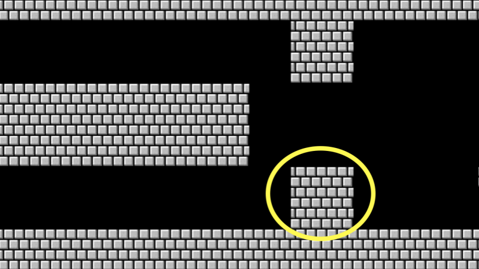

Lecture 1
- Welcome!
- Source Code
- Visual Studio Code for CS50
- Hello World
- From Scratch to C
- Header Files and CS50 Manual Pages
- Hello, You
- Linux
- Conditionals
- Types
- Format Codes
- Variables
- compare.c
- agree.c
- Loops and meow.c
- Functions
- Correctness, Design, Style
- Mario
- Operators
- Summing Up
Welcome!
- In our previous session, we learned about Scratch, a visual programming language.
- Learning computer science concepts can be quite challenging. Indeed, it can feel like you are drinking from a firehose. Remember: What is ultimately important is the gains you experience over these coming weeks and months through your hard work and study in this course.
- Indeed, all the essential programming concepts presented in Scratch will be utilized as you learn how to program any programming language. Functions, conditionals, loops, and variables found in Scratch are fundamental building blocks that you will find in any programming language.
Source Code
- Recall that machines only understand binary. Where humans write source code, a list of instructions for the computer that is human readable, machines only understand what we can now call machine code. This machine code is a pattern of ones and zeros that produces a desired effect.
-
It turns out that we can convert source code into machine code using a very special piece of software called a compiler. Today, we will be introducing you to a compiler that will allow you to convert source code in the programming language C into machine code.
flowchart LR in["source code"] --> BOX[" compiler "] BOX --> out["machine code"] - Today, in addition to learning how to program, you will be learning how to write good code.
Visual Studio Code for CS50
- The text editor that is utilized for this course is Visual Studio Code, aka VS Code, affectionately referred to as cs50.dev, which can be accessed via that same URL.
- One of the most important reasons we utilize VS Code is that it has all the software required for the course already pre-loaded on it. This course and the instructions herein were designed with VS Code in mind.
- Manually installing the necessary software for the course on your own computer is a cumbersome headache. Best always to utilize VS Code for assignments in this course.
- You can open VS Code at cs50.dev.
-
The IDE can be divided into a number of regions:
 Notice that there is a file explorer on the left side where you can find your files. Further, notice that there is a region in the middle called a text editor where you can edit your program. Finally, there is a
Notice that there is a file explorer on the left side where you can find your files. Further, notice that there is a region in the middle called a text editor where you can edit your program. Finally, there is a command line interface, known as a CLI, command line, or terminal window, where we can send commands to the computer in the cloud. - You will also notice in the graphical user interface (GUI) on the left-hand bar, various tools and a file explorer.
- Because this IDE is pre-configured with all the necessary software, you should use it to complete all assignments for this course.
Hello World
-
We will be using three commands to write, compile, and run our first program:
code hello.c make hello ./helloThe first command,
code hello.ccreates a file and allows us to type instructions for this program. The second command,make hello, compiles the file from our instructions in C and creates an executable file calledhello. The last command,./hello, runs the program calledhello. -
We can build your first program in C by typing
code hello.cinto the terminal window. Notice that we deliberately lowercased the entire filename and included the.cextension. Then, in the text editor that appears, write code as follows:// A program that says hello to the world #include <stdio.h> int main(void) { printf("hello, world\n"); }Note that every single character above serves a purpose. If you type it incorrectly, the program will not run.
printfis a function that can output a line of text. Notice the placement of the quotes and the semicolon. Further, notice that the\ncreates a new line after the wordshello, world. - Clicking back in the terminal window, you can compile your code by executing
make hello. Notice that we are omitting.c.makeis a build tool that will compile ourhello.cfile and turn it into a program calledhello. If executing this command results in no errors, you can proceed. If not, double-check your code to ensure it matches the above. - Now, type
./helloand your program will execute sayinghello, world. - Now, open the file explorer on the left. You will notice that there is now both a file called
hello.cand another file calledhello.hello.ccontains your source code that can be read by humans and the compiler.hellois an executable file containing machine code that the computer can run directly.
From Scratch to C
- In Scratch, we utilized the
sayblock to display any text on the screen. Indeed, in C, we have a function calledprintfthat does exactly this. -
Notice our code already invokes this function:
printf("hello, world\n");Notice that the printf function is called. The argument passed to printf is
hello, world\nsurrounded by double quotes. The statement of code is closed with a;. -
Errors in code are common, especially in regards to syntax like semicolons and quotes. Modify your code as follows:
// \n is missing #include <stdio.h> int main(void) { printf("hello, world"); }Notice the
\nis now gone. - In your terminal window, run
make hello. Because you changed your program, you have to re-compile your program. - Typing
./helloin the terminal window, how did your program change? This\character is called an escape character that tells the compiler that\nis a special instruction to create a line break. -
There are other escape characters you can use:
\n create a new line \r return to the start of a line \" print a double quote \' print a single quote \\ print a backslash -
Restore your program to the following:
// A program that says hello to the world #include <stdio.h> int main(void) { printf("hello, world\n"); }Notice the semicolon and
\nhave been restored.
Header Files and CS50 Manual Pages
- The statement at the start of the code
#include <stdio.h>is a very special command that tells the compiler that you want to use the capabilities of a library calledstdio.h, a header file. This allows you, among many other things, to utilize theprintffunction. Notice, it’s not called studio: it’sstdio.h. - A library is a collection of code created by someone. Libraries are collections of pre-written code and functions that others have written in the past that we can utilize in our code.
- You can read about all the capabilities of this library on the Manual Pages. The Manual Pages provide a means by which to better understand what various commands do and how they function.
-
It turns out that CS50 has its own library called
cs50.h. There are numerous functions that are included that provide training wheels while you get started in C:get_char get_double get_float get_int get_long get_string - These libraries have been pre-installed for you at cs50.dev. If you were attempting to use these libraries on your own computer, you would likely have to install them. This is why you should use cs50.dev in this course, as it has all necessary software installed for you.
- Let’s use this library in your program.
Hello, You
- Recall that in Scratch we had the ability to ask the user, “What’s your name?” and say “hello” with that name appended to it.
-
In C, we can do the same. Modify your code as follows:
// get_string and printf with incorrect placeholder #include <cs50.h> #include <stdio.h> int main(void) { string answer = get_string("What's your name? "); printf("hello, answer\n"); }The
get_stringfunction is used to get a string from the user. Then, the variableansweris passed to theprintffunction. - Running
make helloagain in the terminal window, notice that numerous errors appear. -
Looking at the errors,
stringandget_stringare not recognized by the compiler. We need to provide the compiler with these definitions by adding a library calledcs50.h. Also, we notice thatansweris not provided as we intended. Modify your code as follows:// get_string and printf with %s #include <cs50.h> #include <stdio.h> int main(void) { string answer = get_string("What's your name? "); printf("hello, %s\n", answer); }The
get_stringfunction is used to get a string from the user. Then, the variableansweris passed to theprintffunction.%stells theprintffunction to prepare itself to receive astring. - Now, running
make helloagain in the terminal window, you can run your program by typing./hello. The program now asks for your name and then says hello with your name attached, as intended. -
answeris a special holding place we call a variable.answeris of typestringand can hold any string within it. There are many data types, such asint,bool,char, and many others. -
%sis a placeholder called a format code that tells theprintffunction to prepare to receive astring.answeris thestringbeing passed to%s.
Linux
- We have been using the CLI to
makeand run our program. - The CLI is often more useful than the GUI for executing commands and working with our files.
- In the terminal window, the CLI, some common commands we may use include:
-
cd, for changing our current directory (folder) -
cp, for copying files and directories -
ls, for listing files in a directory -
mkdir, for making a directory -
mv, for moving (renaming) files and directories -
rm, for removing (deleting) files -
rmdir, for removing (deleting) directories
-
- The most commonly used is
lswhich will list all the files in the current directory. Go ahead and typelsinto the terminal window and hitenter. You’ll see all the files in the current folder.
Conditionals
- Another building block you utilized within Scratch was conditionals. For example, you might want to do one thing if x is greater than y. Further, you might want to do something else if that condition is not met.
- We look at a few examples from Scratch.
-
In C, you can compare two values as follows:
// Conditionals that are mutually exclusive if (x < y) { printf("x is less than y\n"); } else { printf("x is not less than y\n"); }Notice how if
x < y, one outcome occurs. Ifxis not less thany, then another outcome occurs. -
Similarly, we can plan for three possible outcomes:
// Conditional that isn't necessary if (x < y) { printf("x is less than y\n"); } else if (x > y) { printf("x is greater than y\n"); } else if (x == y) { printf("x is equal to y\n"); }Notice that not all these lines of code are required. How could we eliminate the unnecessary calculation above?
-
You may have guessed that we can improve this code as follows:
// Compare integers if (x < y) { printf("x is less than y\n"); } else if (x > y) { printf("x is greater than y\n"); } else { printf("x is equal to y\n"); }Notice how the final statement is replaced with
else.
Types
-
There are many data types that are available within C:
bool char float int long string ...
Format Codes
- Earlier, you may recall that we used a placeholder
%sfor a string inprintf. This placeholder is called a format code. -
printfallows for many format codes. Here is a non-comprehensive list of ones you may utilize in this course:%c %f %i %li %s%cis used forchar(character) variables.%fis used forfloat(floating-point) variables.%iis used forintor integer variables.%liis used forlonginteger variables.%sis used forstringvariables. You can find out more about this on the Manual Pages. - We will be using many of C’s available data types throughout this course.
Variables
-
In C, you can assign a value to an
intor integer as follows:int counter = 0;Notice how a variable called
counterof typeintis assigned the value0. -
C can also be programmed to add one to
counteras follows:counter = counter + 1;Notice how
1is added to the value ofcounter. -
This can be also represented as:
counter += 1; -
This can be further simplified to:
counter++;Notice how the
++is used to add 1. -
You can also subtract one from
counteras follows:counter--;Notice how, in this syntax,
1is removed from the value ofcounter.
compare.c
- Using this new knowledge about how to assign values to variables, you can program your first conditional statement.
-
In the terminal window, type
code compare.cand write code as follows:// Conditional, Boolean expression, relational operator #include <cs50.h> #include <stdio.h> int main(void) { // Prompt user for integers int x = get_int("What's x? "); int y = get_int("What's y? "); // Compare integers if (x < y) { printf("x is less than y\n"); } }Notice that we create two variables, an
intor integer calledxand another calledy. The values of these are populated using theget_intfunction. - You can run your code by executing
make comparein the terminal window, followed by./compare. If you get any error messages, check your code for errors. -
We can improve your program by coding as follows:
// Conditionals #include <cs50.h> #include <stdio.h> int main(void) { // Prompt user for integers int x = get_int("What's x? "); int y = get_int("What's y? "); // Compare integers if (x < y) { printf("x is less than y\n"); } else if (x > y) { printf("x is greater than y\n"); } else { printf("x is equal to y\n"); } }Notice that all potential outcomes are now accounted for.
- You can re-make and re-run your program and test it out.
- Examining these programs in various flow charts, you can see the efficiency of our code design decisions. Nearly any block of code can be translated to visual form.
agree.c
- Considering another data type called a
char, we can start a new program by typingcode agree.cinto the terminal window. - Where a
stringis a series of characters, acharis a single character. -
In the text editor, write code as follows:
// Comparing against lowercase char #include <cs50.h> #include <stdio.h> int main(void) { // Prompt user to agree char c = get_char("Do you agree? "); // Check whether agreed if (c == 'y') { printf("Agreed.\n"); } else if (c == 'n') { printf("Not agreed.\n"); } }Notice that single quotes are utilized for single characters (
chartype), while double quotes are used for strings. Further, notice that==ensures that something is equal to something else, where a single equal sign would have a very different function in C. - You can test your code by typing
make agreeinto the terminal window, followed by./agree. -
We can also allow for the inputting of uppercase and lowercase characters:
// Comparing against lowercase and uppercase char #include <cs50.h> #include <stdio.h> int main(void) { // Prompt user to agree char c = get_char("Do you agree? "); // Check whether agreed if (c == 'y') { printf("Agreed.\n"); } else if (c == 'Y') { printf("Agreed.\n"); } else { printf("Not agreed.\n"); } }Notice that additional options are offered. However, this is not efficient code.
-
We can improve this code as follows:
// Logical operators #include <cs50.h> #include <stdio.h> int main(void) { // Prompt user to agree char c = get_char("Do you agree? "); // Check whether agreed if (c == 'Y' || c == 'y') { printf("Agreed.\n"); } else { printf("Not agreed.\n"); } }Notice that
||effectively means or.
Loops and meow.c
- We can also utilize the loop building block from Scratch in our C programs.
-
In your terminal window, type
code meow.cand write code as follows:// Opportunity for better design #include <stdio.h> int main(void) { printf("meow\n"); printf("meow\n"); printf("meow\n"); }Notice this does as intended but has an opportunity for better design. Code is repeated over and over.
-
We can improve our program by modifying your code as follows:
// Better design #include <stdio.h> int main(void) { int i = 3; while (i > 0) { printf("meow\n"); i--; } }Notice that we create an
intcallediand assign it the value3. Then, we create awhileloop that will run as long asi > 0. Then, the loop runs. Every time1is subtracted fromiusing thei--statement. -
Similarly, we can implement a count-up of sorts by modifying our code as follows:
// Print values of i #include <stdio.h> int main(void) { int i = 1; while (i <= 3) { printf("meow\n"); i++; } }Notice how our counter
iis started at1. Each time the loop runs, it will increment the counter by1. Once the counter is greater than3, it will stop the loop. -
Generally, in computer science, we count from zero. Best to revise your code as follows:
// Better design #include <stdio.h> int main(void) { int i = 0; while (i < 3) { printf("meow\n"); i++; } }Notice we now count from zero.
- Another tool in our toolbox for looping is a
forloop. -
You can further improve the design of our
meow.cprogram using aforloop. Modify your code as follows:// Better design #include <stdio.h> int main(void) { for (int i = 0; i < 3; i++) { printf("meow\n"); } }Notice that the
forloop includes three arguments. The first argumentint i = 0starts our counter at zero. The second argumenti < 3is the condition that is being checked. Finally, the argumenti++tells the loop to increment by one each time the loop runs. -
We can even loop forever using the following code:
// Infinite loop #include <cs50.h> #include <stdio.h> int main(void) { while (true) { printf("meow\n"); } }Notice that
truewill always be the case. Therefore, the code will always run. You will lose control of your terminal window by running this code. You can break from an infinite loop by hittingcontrol-Con your keyboard (this sends a SIGINT signal to terminate the program). -
We can ask the user how many times to meow by modifying the code as follows:
// Prompts user for n. #include <cs50.h> #include <stdio.h> int main(void) { int n = get_int("What's n? "); for (int i = 0; i < n; i++) { printf("meow\n"); } }Notice that
nis defined by the user. Then, there arenmeows. -
What happens if the user inputs something less than zero? Modify your code as follows:
// Prompts user again if need be. (Poor design.) #include <cs50.h> #include <stdio.h> int main(void) { int n = get_int("What's n? "); if (n < 0) { n = get_int("What's n? "); } for (int i = 0; i < n; i++) { printf("meow\n"); } }Notice that this may stop the user from typing a number less than zero once. But what happens if they do it multiple times?
-
Improve your code as follows:
// Uses a loop with continue/break. #include <cs50.h> #include <stdio.h> int main(void) { int n; while (true) { n = get_int("What's n? "); if (n < 0) { continue; } else { break; } } for (int i = 0; i < n; i++) { printf("meow\n"); } }Notice that the
whileloop will run forever untilnis greater than or equal to zero. -
Still, this code could be improved further:
// Uses a loop with just break. #include <cs50.h> #include <stdio.h> int main(void) { int n; while (true) { n = get_int("What's n? "); if (n >= 0) { break; } } for (int i = 0; i < n; i++) { printf("meow\n"); } }Notice how our prior code is simplified, removing unnecessary lines of code.
-
Similar to a
whileloop, we could implement this code using ado-whileloop:// Uses a do-while loop instead. #include <cs50.h> #include <stdio.h> int main(void) { int n; do { n = get_int("What's n? "); } while (n < 0); for (int i = 0; i < n; i++) { printf("meow\n"); } }Notice that the
dowill always run at least once. That portion of code will loop whilenis less than zero. - A critical eye may see that we could abstract away the portion of the code that meows.
Functions
-
While we will provide much more guidance later, you can create your own function within C as follows:
void meow(void) { printf("meow\n"); }The initial
voidmeans that the function does not return any values. The(void)means that no values are being provided to the function. -
This function can be used in the main function as follows:
// Abstraction #include <stdio.h> void meow(void); int main(void) { for (int i = 0; i < 3; i++) { meow(); } } // Meow once void meow(void) { printf("meow\n"); }Notice how the
meowfunction is called with themeow()instruction. This is possible because themeowfunction is defined at the bottom of the code, and the prototype of the function is provided at the top of the code asvoid meow(void). -
Your
meowfunction can be further modified to accept input:// Abstraction with parameterization #include <stdio.h> void meow(int n); int main(void) { meow(3); } // Meow some number of times void meow(int n) { for (int i = 0; i < n; i++) { printf("meow\n"); } }Notice that the prototype has changed to
void meow(int n)to show thatmeowaccepts anintas its input. -
When working with variables and functions, it’s important to understand the scope of a variable. Consider the following code:
// Demonstrates scope #include <stdio.h> void meow(int n); int main(void) { int n = 3; meow(n); } // Meow some number of times void meow(int n) { for (int i = 0; i < n; i++) { printf("meow\n"); } }Notice how
nis defined in themainfunction. Because of that,nis only in the scope of themainfunction. The only way that themeowfunction is able to usenis that a copy ofnis passed to themeowfunction.meowis not using the originalnfrom themainfunction. Instead, it is using its own copy ofn. -
With some modification to our code, we can get user input:
// User input #include <cs50.h> #include <stdio.h> void meow(int n); int main(void) { int n; do { n = get_int("Number: "); } while (n < 1); meow(n); } // Meow some number of times void meow(int n) { for (int i = 0; i < n; i++) { printf("meow\n"); } }Notice that
get_intis used to obtain a number from the user.nis passed tomeow. -
We can even test to ensure that the input we get provided by the user is correct:
// Return value #include <cs50.h> #include <stdio.h> int get_positive_int(void); void meow(int n); int main(void) { int n = get_positive_int(); meow(n); } // Get number of meows int get_positive_int(void) { int n; do { n = get_int("Number: "); } while (n < 1); return n; } // Meow some number of times void meow(int n) { for (int i = 0; i < n; i++) { printf("meow\n"); } }Notice that a new function called
get_positive_intasks the user for an integer whilen < 1. After obtaining a positive integer, this function willreturn nback to themainfunction.
Correctness, Design, Style
- Code can be evaluated upon three axes.
- First, correctness refers to “Does the code run as intended?” You can check the correctness of your code with
check50. - Second, design refers to “How well is the code designed?” You can evaluate the design of your code using
design50. - Finally, style refers to “How aesthetically pleasing and consistent is the code?” You can evaluate the style of your code with
style50.
Mario
- Everything we’ve discussed today has focused on various building blocks of your work as an emerging computer scientist.
- The following will help you orient toward working on a problem set for this class in general: How does one approach a computer science-related problem?
-
Imagine we wanted to emulate the visual of the game Super Mario Bros. Considering the four question blocks pictured, how could we create code that roughly represents these four horizontal blocks?

-
In the terminal window, type
code mario.cand code as follows:// Prints a row of 4 question marks #include <stdio.h> int main(void) { printf("????\n"); }Notice that four question marks are printed.
-
Using a loop, we can more efficiently print the question marks:
// Prints a row of 4 question marks with a loop #include <stdio.h> int main(void) { for (int i = 0; i < 4; i++) { printf("?"); } printf("\n"); }Notice how four question marks are printed here using a loop.
-
Similarly, we can apply this same logic to create three vertical blocks.

-
To accomplish this, modify your code as follows:
// Prints a column of 3 bricks with a loop #include <stdio.h> int main(void) { for (int i = 0; i < 3; i++) { printf("#\n"); } }Notice how three vertical bricks are printed using a loop.
-
What if we wanted to combine these ideas to create a three-by-three group of blocks?

-
We can follow the logic above, combining the same ideas. Modify your code as follows:
// Prints a 3-by-3 grid of bricks with nested loops #include <stdio.h> int main(void) { for (int i = 0; i < 3; i++) { for (int j = 0; j < 3; j++) { printf("#"); } printf("\n"); } }Notice that one loop is inside another. The first loop defines what vertical row is being printed. For each row, three columns are printed. After each row, a new line is printed.
-
What if we wanted to ensure that the number of blocks is constant, that is, unchangeable? Modify your code as follows:
// Prints a 3-by-3 grid of bricks with nested loops using a constant #include <stdio.h> int main(void) { const int n = 3; for (int i = 0; i < n; i++) { for (int j = 0; j < n; j++) { printf("#"); } printf("\n"); } }Notice how
nis now a constant. It can never be changed. -
As illustrated earlier in this lecture, we can abstract away functionality into functions. Consider the following code:
// Helper function #include <stdio.h> void print_row(int width); int main(void) { const int n = 3; for (int i = 0; i < n; i++) { print_row(n); } } void print_row(int width) { for (int i = 0; i < width; i++) { printf("#"); } printf("\n"); }Notice how printing a row is accomplished through a new function.
Operators
-
Operators refer to the mathematical operations that are supported by your compiler. In C, these mathematical operators include:
-
+for addition -
-for subtraction -
*for multiplication -
/for division -
%for remainder
-
- We will use all of these operators in this course.
-
Let’s implement our own calculator by typing
code calculator.cin the terminal and modifying our code as follows:// Addition with int #include <cs50.h> #include <stdio.h> int main(void) { // Prompt user for x int x = get_int("What's x? "); // Prompt user for y int y = get_int("What's y? "); // Add numbers int z = x + y; // Perform addition printf("%i\n", z); }Notice how we create a third variable
zto store the sum ofxandy, then print the result using%i(the format specifier for integers). -
We could write more efficient code as follows:
// Addition with int, without third variable #include <cs50.h> #include <stdio.h> int main(void) { // Prompt user for x int x = get_int("What's x? "); // Prompt user for y int y = get_int("What's y? "); // Perform addition printf("%i\n", x + y); }Notice that we eliminated the need for the third variable
zby performing the addition directly within theprintfstatement, making our code more concise. -
We could use multiplication:
// Doubles a number #include <cs50.h> #include <stdio.h> int main(void) { // Prompt user for x int x = get_int("What's x? "); // Double it printf("%i\n", x * 2); }Notice how we use the multiplication operator
*to double the input value, demonstrating another arithmetic operation beyond addition. -
Integers in
Ccan only count so high. Consider the following:// Overflow #include <cs50.h> #include <stdio.h> int main(void) { int dollars = 1; while (true) { char c = get_char("Here's $%i. Double it and give to next person? ", dollars); if (c == 'y') { dollars *= 2; } else { break; } } printf("Here's $%i.\n", dollars); }Notice how the program repeatedly doubles the dollar amount. Eventually, the integer will exceed its maximum value and “overflow,” wrapping around to a negative number or zero.
- Integer overflow is when a calculation produces a value that exceeds the maximum storage capacity of the data type, causing the value to wrap around unpredictably.
- One of C’s challenges is that while it provides you immense control over how memory is utilized, programmers have to be very aware of the potential pitfalls of memory management.
- Types refer to the possible data that can be stored in a variable. For example, a
charis designed to accommodate a single character likeaor2. - Types are very important because each type has specific limits. For example, because of the limits in memory, the highest value of a signed
intis typically2147483647, while an unsignedintcan reach4294967295. If you attempt to count aninthigher than its maximum, an integer overflow will result where an incorrect value will be stored in this variable. - The number of bits determines the range of values we can represent.
- This can have catastrophic, real-world impacts.
-
We can solve this issue by using a
longvariable type:// long #include <cs50.h> #include <stdio.h> int main(void) { long dollars = 1; while (true) { char c = get_char("Here's $%li. Double it and give to next person? ", dollars); if (c == 'y') { dollars *= 2; } else { break; } } printf("Here's $%li.\n", dollars); }Notice that we changed from
inttolongand use%liinstead of%iin our format strings. Alongcan store much larger values than anint, delaying (but not eliminating) the overflow problem. -
You may know that integers and floating point variables have a significant difference: The ability to represent numbers less than
1. Consider the following:// Division with ints, demonstrating truncation #include <cs50.h> #include <stdio.h> int main(void) { // Prompt user for x int x = get_int("What's x? "); // Prompt user for y int y = get_int("What's y? "); // Divide x by y printf("%i\n", x / y); }Notice that when dividing two integers, C performs integer division and truncates (discards) any decimal portion. For example, 7 / 2 would give 3, not 3.5.
- Floating point imprecision illustrates that there are limits to how precise computers can calculate numbers.
- As you are coding, pay special attention to the types of variables you are using to avoid problems within your code.
-
We examined some examples of disasters that can occur through type-related errors.
-
Similarly, we can
castan integer to be afloat. Consider the following:// Casting #include <cs50.h> #include <stdio.h> int main(void) { // Prompt user for x int x = get_int("What's x? "); // Prompt user for y int y = get_int("What's y? "); // Divide x by y printf("%f\n", (float) x / y); }Notice how we cast
xto afloatbefore division using(float) x. This converts the integer to a floating-point number, allowing the division to produce a decimal result instead of truncating. -
We could use
floats throughout:// Floats #include <cs50.h> #include <stdio.h> int main(void) { // Prompt user for x float x = get_float("What's x? "); // Prompt user for y float y = get_float("What's y? "); // Divide x by y printf("%.50f\n", x / y); }Notice that we use
get_floatfor input and%.50fto display up to 50 decimal places, revealing the limitations of floating-point precision as the result may show unexpected digits due to binary representation constraints.
Summing Up
In this lesson, you learned how to apply the building blocks you learned in Scratch to the C programming language. You learned…
- How to create your first program in C.
- How to use the command line.
- About predefined functions that come natively with C.
- How to use variables, conditionals, and loops.
- How to create your own functions to simplify and improve your code.
- How to evaluate your code on three axes: correctness, design, and style.
- How to integrate comments into your code.
- How to utilize types and operators and the implications of your choices.
See you next time!